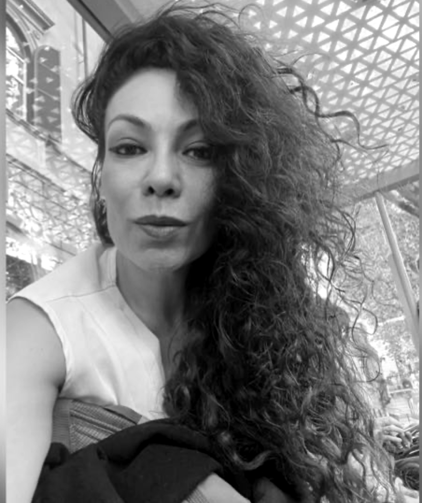

EntendercómodecideMéxico
20 años de investigación electoral y opinión pública.
Hablemos →20 años leyendo la opinión pública.
Dos décadas de campo y análisis. Cada elección enseña algo que la anterior no podía mostrar, y esa memoria es parte de lo que entregamos.
Qué hacemos
Investigación pensada para una decisión concreta: saber dónde está el electorado y por qué.
Medimos preferencias, intención de voto, percepción de candidaturas y factores que influyen en las decisiones del electorado.
Recopilamos información de electores al ingresar a los centros de votación, para comprender perfiles y comportamientos durante la jornada electoral.
Investigamos las decisiones de voto de ciudadanos al salir de las casillas, generando estimaciones y análisis durante la jornada electoral.
Estimamos resultados electorales mediante procedimientos estadísticos basados en muestras de casillas.
Una buena cifra empieza en el diseño.
Lo que una encuesta puede decir se decide antes de salir a campo: a quién se pregunta, cómo se pregunta y cómo se lee la respuesta.
- Definir la pregunta de decisiónIdentificamos qué información se necesita y para qué.
- Diseñar muestra y cuestionarioAdaptamos el diseño de investigación a los objetivos del estudio.
- Levantar con controlRecopilamos información mediante procedimientos establecidos para el trabajo de campo.
- Analizar e interpretarConvertimos los resultados en hallazgos claros y contextualizados.
Escuchamos al electorado donde vive.
En la plaza, en la calle, en el barrio. Ahí se forma la opinión que después se vuelve voto.
Una sola especialidad: entender cómo decide el votante.
Especialización electoral
Nuestro foco es la investigación electoral y la opinión pública. Veinte años observando al votante.
Criterio, no ruido
Un número sin contexto confunde. Entregamos hallazgos que se pueden explicar, defender y usar.
Método antes que expectativa
El estudio se diseña para medir el escenario, no para confirmar una idea previa.
Equipo
Un equipo especializado en investigación electoral que combina experiencia, rigor metodológico y conocimiento del contexto político y social de México.
Las personas detrás de los datos.
20 años de experiencia en investigación electoral y opinión pública.
-

Verónica
Verónica Arredondo
-
Valeria
Valeria Falcón
Tu próxima decisión merece datos que se puedan defender.
Cuéntanos qué elección o escenario quieres entender. Te respondemos para definir el siguiente paso.
Correo: [por confirmar]
Teléfono: [por confirmar]
Oficina: [por confirmar]